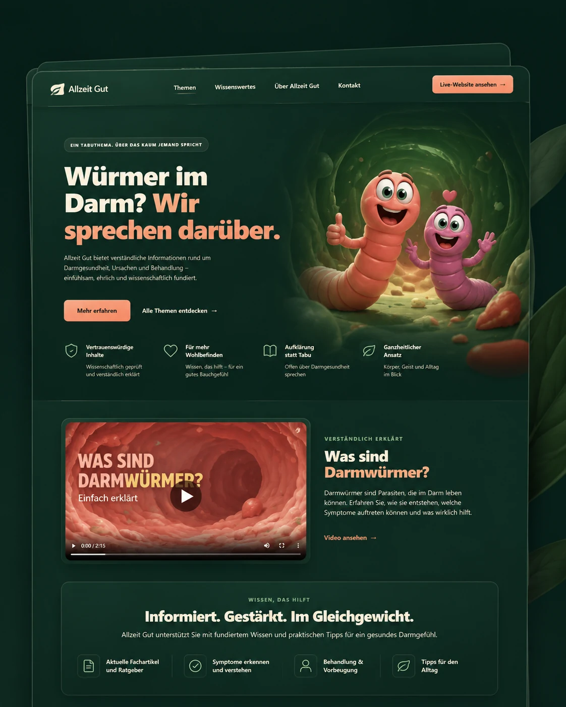

Kundenprojekt
Live online
Website · Allzeit Gut
Mehrseitige Informationswebsite mit geschütztem Adminbereich
Für Allzeit Gut wurde eine responsive Website mit klarer Inhaltsstruktur, technischer Betreuung und integrierter Analytics-Auswertung umgesetzt.
- Responsive Umsetzung für Desktop, Tablet und Smartphone
- Mehrseitige Struktur mit zentral gepflegten Komponenten
- Google Analytics mit Auswertung im geschützten Adminbereich
- SEO-Grundlagen, Sitemap und technische Vorbereitung für Suchmaschinen
Ausgangslage
Mehrere Themenbereiche sollten auf Desktop und Mobilgeräten übersichtlich erreichbar sein.
Umsetzung
Responsive Seitenstruktur, geschützter Adminbereich, Analytics und SEO-Grundlagen wurden gemeinsam aufgebaut.
Ergebnis
Inhalte, Auswertung und spätere Anpassungen sind in einer nachvollziehbaren Struktur vorbereitet.


 GitHub-Profil ansehen
GitHub-Profil ansehen